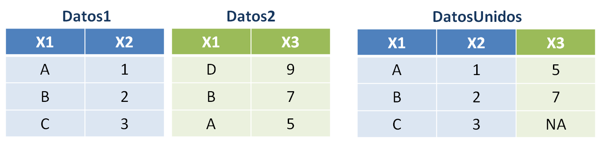

6 Uso de archivos de datos
6.1 Introducción
Como hemos visto, los programas usan variables para guardar información: datos de entrada, resultados calculados, valores intermedios, etc. Sin embargo, la información guardada en las variables es efímera. Cuando los programas paran de correr, el valor almacenado en las variables se pierde. En muchas ocasiones, es necesario guardar información de una forma más permanente.
En estos casos, el enfoque usual es recolectar la información en un todo lógicamente cohesivo y guardarlo en un medio permanente que generalmente se graba en el disco rígido de la máquina, es decir, en un archivo. Un archivo o fichero es un conjunto de información sobre un mismo tema tratado como una unidad de almacenamiento y organizado de forma estructurada para la búsqueda de un dato individual. Los archivos pueden contener instrucciones de programas o información creada o usada por un programa. Todos los objetos de datos permanentes que guardamos en nuestra computadora (documentos, juegos, programas ejecutables, código, etc.) son guardados en la forma de archivos.
Un archivo se identifica con un nombre, seguido por un punto y una extensión, la cual es un sufijo empleado para indicar características de su contenido, el uso pretendido o el software con el cual puede ser empleado. Por ejemplo, un archivo que se llama planilla.xlsx es una hoja de cálculo de Excel o un archivo llamado codigo.R es un script de código de R.
6.1.1 Registros, campos, claves y bases de datos
En esta asignatura nos limitaremos a trabajar con archivos que guardan información de forma tabular, en los que la unidad elemental que los compone es un registro, es decir, una colección de información relativa a una misma entidad. En general, cada registro de un mismo archivo tiene la misma estructura que los demás. Los datos individuales sobre dicha entidad se organizan en campos. Un campo es la mínima unidad de información de un registro.
Para ejemplificar, trabajaremos con un archivo llamado mundiales.txt que tiene datos sobre todos los mundiales de fútbol de la FIFA, incluyendo el del año 2022, en el cual nuestra selección argentina conquistó su tercer título. Cada fila del conjunto de datos corresponde a un país y cada columna hace referencia a las siguientes variables25:
ARCHIVO: mundiales.txt
Campo 1 - seleccion: nombre del país, tipo carácter
Campo 2 - continente: continente al que pertenece el país, tipo carácter
Campo 3 - participaciones: cantidad de mundiales jugados, tipo numérico
Campo 4 - pg: cantidad de partidos ganados, tipo numérico
Campo 5 - pe: cantidad de partidos empatados, tipo numérico
Campo 6 - pp: cantidad de partidos perdidos, tipo numérico
Campo 7 - gf: cantidad de goles a favor, tipo numérico
Campo 8 - gf: cantidad de goles en contra, tipo numérico
Campo 9 - titulo: cantidad de mundiales ganados, tipo numéricoEste archivo tiene 80 registros, ya que son 80 países los que han disputado algún mundial a lo largo de la historia. Los primeros registros lucen así:
| seleccion | continente | participaciones | pg | pe | pp | gf | gc | titulos |
|---|---|---|---|---|---|---|---|---|
| Brasil | América | 22 | 76 | 19 | 19 | 237 | 108 | 5 |
| Alemania | Europa | 20 | 68 | 21 | 23 | 232 | 130 | 4 |
| Argentina | América | 18 | 47 | 17 | 24 | 152 | 101 | 3 |
| Italia | Europa | 18 | 45 | 21 | 17 | 128 | 77 | 4 |
| Francia | Europe | 16 | 39 | 14 | 20 | 136 | 85 | 2 |
Un campo está caracterizado por el tipo de datos que almacena (carácter, numérico, lógico) y en algunos contextos es necesario precisar su longitud (por ejemplo, cantidad de caracteres admitidos como máximo en los datos del campo). Algunos lenguajes, como R, admiten trabajar con campos de longitud variable (sin necesidad de que sea especificada con anticipación).
En el contexto del análisis de datos, cada columna o campo en este tipo de archivos puede representar una variable observada sobre los individuos o unidades de interés, los cuales se encuentran dispuestos en las sucesivas filas.
Generalmente suele ser necesario identificar de manera única a cada registro de un archivo. Para esto suele considerarse a uno de los campos del archivo como el campo clave o, más sencillamente, clave. La clave o key es el campo que identifica inequívocamente a cada registro, permitiendo diferenciarlo del resto, como podría ser el nombre de la selección en el ejemplo anterior. En ocasiones donde no hay un campo clave es posible identificar un registro a través de la combinación de los valores presentes en más de uno de los campos.
Por último, cabe mencionar que llamamos base de datos a un conjunto de archivos que contienen datos relacionados entre sí, vinculados mediante sistemas complejos que enlazan las claves de uno y otro archivo y que pueden ser consultados mediante el uso de software especializado. Por eso, cuando trabajamos con los datos almacenados en un único archivo, es conveniente referirse a los mismos como “conjunto de datos” y no como “base de datos”.
6.1.2 Organización de archivos
Existen distintos tipos de organización de los archivos según la forma en la que se pueda acceder a cada uno de sus registros:
-
Organización secuencial
Los registros se encuentran en cierto orden que debe ser respetado para la lectura de los mismos. Para leer el registro situado en la posición n, el programa previamente tiene que pasar por los n-1 registros que ocupan las posiciones anteriores.
Los archivos de tipo secuencial en general ocupan menos memoria y suelen ser utilizados para guardar contenidos que sufren pocas modificaciones. Los registros se graban consecutivamente en el soporte que los aloja (por ejemplo, en el disco). El orden físico con el que fueron escritos los registros coincide con el orden de lectura de los mismos.
Los registros pueden leerse uno por uno hasta llegar al final del archivo, donde se indica de alguna manera el fin del mismo, muchas veces a través de un caracter especial como un asterisco o de una línea en blanco. Esta marca generalmente se conoce como EOF (end of file). La mayoría de los lenguajes de programación disponen de una función lógica que devuelve un valor
VERDADEROcuando se alcanza el final del archivo. -
Organización directa
Son archivos que están organizados de manera que se pueda acceder de forma directa a cada registro mediante su posición en el soporte físico que lo contiene, sin tener que pasar secuencialmente por los registros anteriores. Poseen la ventaja de brindar un acceso rápido a la información y la posibilidad de leer y escribir registros en cualquier posición y orden.
Se puede mencionar como desventaja de este tipo de organización el hecho de que requiere la programación de la forma de identificar la posición de un registro a partir de alguno de los valores de sus campos, generalmente, la clave. Esto se hace mediante un algoritmo de transformación de la clave (llamado hash function) que a partir de la misma devuelve la dirección del registro en el soporte físico. El archivo debe diseñarse teniendo en cuenta de antemano una cantidad total de registros fija.
-
Organización indexada
Los archivos están estructurados de manera que los registros se pueden localizar sin pasar por los anteriores, consultando en una tabla adicional de índices la zona del archivo donde se encuentra el registro buscado. Esto permite localizar un registro por medio de su clave o del valor de algún campo en particular.
Para imaginarnos esto, podemos pensar que un diccionario es un ejemplo de un archivo indexado, ya que podemos encontrar la región donde se encuentra un registro (palabra) mediante el índice de letras. Si queremos buscar el término “programación” en un diccionario, no recorremos todas las palabras del mismo desde la “A” hasta encontrar el término de interés, sino que buscamos en el índice en qué página del diccionario se encuentra la “P” y comenzamos una búsqueda secuencial desde la misma.
Un archivo indexado, entonces, cuenta en realidad con dos archivos, uno de índices (que se recorre de forma secuencial) y otro con los registros propiamente dichos. Posee la ventaja de brindar un rápido acceso a los registros, pero con el costo de utilizar espacio adicional para la tabla de índices.
La organización más sencilla y más comúnmente empleada es la secuencial, aunque en algunos casos puede no ser la más eficiente. Si bien no todos los lenguajes de programación permiten el trabajo con archivos indexados o de organización directa, todos pueden manejar archivos secuenciales.
En este curso no profundizaremos en esta distinción y trabajaremos con archivos guardados como documentos de Excel (extensión .xlsx) o archivos de texto (extensión .txt o .csv), los cuales siguen una organización secuencial.
Un archivo de texto (también conocido como texto llano o texto simple) es un archivo informático que contiene únicamente texto formado por una secuencia ordenada de caracteres. El texto almacenado en este tipo de archivo carece de cualquier tipo de formato tipográfico (negrita, cursiva, colores, subrayado, fuente, etc.), lo cual permite que una gran variedad de programas pueda leer y editar el contenido. Cada renglón en el archivo de texto es un registro y los distintos campos suelen estar señalizados con tabulaciones (archivos .txt, como el que usaremos de ejemplo, mundiales.txt) o separados por comas o punto y comas (archivos .csv).
Los archivos de texto están compuestos por caracteres ordinarios, como las letras, números y signos de puntuación, y por caracteres especiales que indican, por ejemplo, saltos de línea (\n) y tabulaciones (\t). Pero como en realidad las computadoras solamente entienden números, cada carácter es codificado internamente con una representación numérica binaria, que nosotros nunca llegamos a ver. Distintas maneras de hacer esta representación dan lugar a diferentes formatos de codificación de caracteres (como ASCII, ISO-8859-1 o UTF-8). Si en alguna oportunidad abrimos un archivo y nos percatamos que caracteres como la “ñ” o las tildes han sido reemplazadas por otros produciendo un aspecto “raro”, significa que el archivo ha sido abierto empleando una codificación diferente de la que se utilizó al crear el archivo. La solución para este problema es muy sencilla, sólo hay que cambiar la opción de codificación a la hora de guardar o de abrir el archivo.
6.1.3 Operaciones sobre archivos
El uso de archivos en programación es muy importante ya que nos permite leer datos para hacer algún tipo de procesamiento y también guardar resultados obtenidos. El sistema operativo de la computadora es el que se encarga de manipular los archivos para que podamos leerlos o escribir en ellos, pero debemos aprender las sentencias que el lenguaje de programación elegido utiliza para encargarle esas tareas al sistema operativo. Los procedimientos básicos que los programas pueden llevar a cabo sobre los distintos tipos de archivos son:
Creación de un archivo: para que un archivo pueda ser utilizado, antes tiene que existir, obviamente. Una vez que el archivo de datos fue creado y existe, se pueden hacer con él las restantes operaciones. En la mayoría de las aplicaciones que veremos, tendremos archivos que han sido creados con anterioridad y ya tienen registros, por lo cual usaremos pocas veces esta acción, pero eventualmente crearemos nuevos archivos para guardar nuevas versiones del conjunto de datos o para guardar resultados en otro tipo de documento.
Apertura de un archivo: para que un programa pueda operar sobre un archivo, la primera acción que debe realizar es la apertura del mismo, que incluye la identificación del archivo a utilizar y el modo (lectura o escritura). Esto hace que el sistema operativo establezca una conexión con el archivo que mientras se mantenga activa permitirá la lectura y escritura de registros en el mismo. Dependiendo del lenguaje de programación o de las subsiguientes operaciones a realizar, en algunos casos la apertura tiene que ser indicada con alguna instrucción de manera explícita y en otros, no.
Lectura de registros en un archivo: la lectura consiste en transferir información del archivo a la memoria principal usada por el programa. En los archivos de organización secuencial, los registros se leen uno por uno, es decir, línea por línea, hasta llegar al final del archivo. Sin embargo, en la aplicaciones que nos interesan, el software se encarga de leer automáticamente todos los registros y almacenarlos en alguna estructura de datos especializada que definamos en el ambiente de trabajo.
Escritura en un archivo: la escritura es la transferencia de información guardada en las variables del programa al archivo.
Cierre de un archivo: cuando un programa no vaya a acceder más a un archivo, es necesario indicarlo a través del cierre del mismo, para que se interrumpa la conexión establecida por el sistema operativo. Esto hace que se liberen memoria y recursos del sistema, se prevenga la corrupción de los datos y se exprese explícitamente que ya no se hará más uso del mismo. En algunos lenguajes o para determinadas tareas, esto puede no ser necesario.
-
Otras operaciones: ptras operaciones que se pueden realizar sobre los archivos, en base a combinaciones de las anteriores, incluyen a las acciones de:
- Actualización: añadir (dar de alta), modificar o eliminar (dar de baja) algún registro.
- Clasificación: reubicar los registros de tal forma que queden ordenados por algún campo determinado.
- Fusión o mezcla: combinar dos o más archivos para formar uno nuevo.
- Partición: subdividir los registros por el valor que toman en algún campo para generar más de un archivo.
6.2 Lectura de los registros del archivo
Ya hemos mencionado que R se organiza mediante un sistema de paquetes, algunos de los cuales vienen instalados con la distribución básica de R, mientras que otros deben ser instalados si tenés el particular interés de usarlos. R Base trae muchas funciones útiles para la importación de datos, así como para las subsiguientes tareas de manejo, transformación y resumen. Sin embargo, en este curso aprenderemos a emplear una familia de paquetes conocida como tidyverse, creados para la manipulación, exploración y visualización de datos con un diseño, estructuras y reglas de uso en común, que resultan muy amigables para programar.

Instalamos esta colección de paquetes con:
install.packages("tidyverse")Lo anterior se realiza una sola vez. Luego, cada vez que queramos usar este sistema, usamos library() para que queden a nuestra disposición las funciones provistas por los paquetes más importantes de esta gran familia:
El tidyverse provee una función de uso muy sencillo para leer datos guardados en un archivo de texto con campos separados por tabulaciones, como es el caso de mundiales.txt. En este enlace o en el aula virtual podrás encontrar el archivo de datos.
datos <- read_delim("mundiales.txt")Si tenemos que importar otro tipo de archivo (por ejemplo, de Excel o de texto separado con comas) y no nos acordamos cuál es la función que permite hacerlo, podemos recurrir al menú de importación de datos mediante el botón Import Dataset en el panel Environment de RStudio (arriba a la derecha). Ahí podremos elegir distintas opciones para la importación y automáticamente se generará y ejecutará el código de R necesario, el cual debemos copiar y pegar en nuestro script para dejar sentado cómo se realizó la importación.

Una vez completado este paso, en el ambiente podremos ver listado un nuevo objeto llamado datos, ya que ese es el nombre que elegimos como identificador para el conjunto de datos devuelto por la función read_delim(). Allí también vemos una breve descripción que nos dice que datos tiene 80 observaciones (registros) de 9 variables (campos). Si hacemos clic sobre el nombre del objeto se abrirá una pestaña para que podamos explorar su contenido. Entonces… ¿qué tipo de objeto es datos?:
class(datos)[1] "spec_tbl_df" "tbl_df" "tbl" "data.frame" Hasta ahora habíamos trabajado con tres tipos de datos básicos: numérico, carácter y lógico, y habíamos visto que con los mismos podíamos crear estructuras de datos como vectores, matrices o listas. Como indica la salida anterior, el objeto datos es de tipo data.frame, lo cual significa que es una estructura de datos bidimensional (como una matriz) en la cual cada fila representa a un registro y cada columna representa a uno de los campos del archivo, pudiendo entonces almacenar valores de distinto tipo en cada una de ellas (a diferencia de los arreglos, cuyos valores son todos homogéneos)26.
Existen algunas funciones de R que nos permiten explorar el contenido de un data.frame:
# Muestra los nombres de las columnas (campos del archivo)
names(datos)[1] "seleccion" "continente" "participaciones" "pg"
[5] "pe" "pp" "gf" "gc"
[9] "titulos"
# Muestra la "estructura" interna del dataset
str(datos)spc_tbl_ [80 × 9] (S3: spec_tbl_df/tbl_df/tbl/data.frame)
$ seleccion : chr [1:80] "Brasil" "Alemania" "Argentina" "Italia" ...
$ continente : chr [1:80] "América" "Europa" "América" "Europa" ...
$ participaciones: num [1:80] 22 20 18 18 16 16 16 11 14 14 ...
$ pg : num [1:80] 76 68 47 45 39 32 31 30 25 21 ...
$ pe : num [1:80] 19 21 17 21 14 22 17 14 13 10 ...
$ pp : num [1:80] 19 23 24 17 20 20 19 11 21 20 ...
$ gf : num [1:80] 237 232 152 128 136 104 108 96 89 69 ...
$ gc : num [1:80] 108 130 101 77 85 68 75 52 76 74 ...
$ titulos : num [1:80] 5 4 3 4 2 1 1 0 2 0 ...
- attr(*, "spec")=
.. cols(
.. seleccion = col_character(),
.. continente = col_character(),
.. participaciones = col_double(),
.. pg = col_double(),
.. pe = col_double(),
.. pp = col_double(),
.. gf = col_double(),
.. gc = col_double(),
.. titulos = col_double()
.. )
- attr(*, "problems")=<externalptr>
# Muestra la cantidad de filas y columnas
dim(datos)[1] 80 9
# Muestra la cantidad de filas
nrow(datos)[1] 80
# Muestra la cantidad de columnas
ncol(datos)[1] 9
# Muestra los primeros registros
head(datos)# A tibble: 6 × 9
seleccion continente participaciones pg pe pp gf gc titulos
<chr> <chr> <dbl> <dbl> <dbl> <dbl> <dbl> <dbl> <dbl>
1 Brasil América 22 76 19 19 237 108 5
2 Alemania Europa 20 68 21 23 232 130 4
3 Argentina América 18 47 17 24 152 101 3
4 Italia Europa 18 45 21 17 128 77 4
5 Francia Europe 16 39 14 20 136 85 2
6 Inglaterra Europa 16 32 22 20 104 68 1
# Muestra los últimos registros
tail(datos)# A tibble: 6 × 9
seleccion continente participaciones pg pe pp gf gc titulos
<chr> <chr> <dbl> <dbl> <dbl> <dbl> <dbl> <dbl> <dbl>
1 Emiratos Ára… asia 1 0 0 3 2 11 0
2 China asia 1 0 0 3 0 9 0
3 Canadá América 2 0 0 6 2 12 0
4 Haití América 1 0 0 3 2 14 0
5 R. D. del Co… África 1 0 0 3 0 14 0
6 El Salvador América 2 0 0 6 1 22 0
# Muestra un resumen de cada campo
summary(datos) seleccion continente participaciones pg
Length:80 Length:80 Min. : 1.000 Min. : 0.000
Class :character Class :character 1st Qu.: 1.750 1st Qu.: 0.750
Mode :character Mode :character Median : 4.500 Median : 4.000
Mean : 6.112 Mean : 9.375
3rd Qu.: 9.000 3rd Qu.:12.000
Max. :22.000 Max. :76.000
pe pp gf gc
Min. : 0.00 Min. : 1.000 Min. : 0 Min. : 2.00
1st Qu.: 1.00 1st Qu.: 3.000 1st Qu.: 4 1st Qu.: 11.00
Median : 3.00 Median : 7.500 Median : 15 Median : 24.50
Mean : 5.35 Mean : 9.375 Mean : 34 Mean : 34.00
3rd Qu.: 8.00 3rd Qu.:14.250 3rd Qu.: 43 3rd Qu.: 49.25
Max. :22.00 Max. :28.000 Max. :237 Max. :130.00
titulos
Min. :0.000
1st Qu.:0.000
Median :0.000
Mean :0.275
3rd Qu.:0.000
Max. :5.000 Un data.frame puede ser indexado de la misma forma empleada con matrices, por ejemplo:
# Mostrar las filas 3 y 4, columnas 1 y 3
datos[3:4, c(1, 3)]# A tibble: 2 × 2
seleccion participaciones
<chr> <dbl>
1 Argentina 18
2 Italia 18
# Mostrar las filas 3 y 4, columnas "seleccion" y "participaciones"
datos[3:4, c("seleccion", "participaciones")]# A tibble: 2 × 2
seleccion participaciones
<chr> <dbl>
1 Argentina 18
2 Italia 18Para hacer referencia exclusivamente a una variable dentro del data.frame, usamos el nombre del conjunto de datos, seguido por el operador $ y el nombre de la variable, por ejemplo:
datos$titulos [1] 5 4 3 4 2 1 1 0 2 0 0 0 0 0 0 0 0 0 0 0 0 0 0 0 0 0 0 0 0 0 0 0 0 0 0 0 0 0
[39] 0 0 0 0 0 0 0 0 0 0 0 0 0 0 0 0 0 0 0 0 0 0 0 0 0 0 0 0 0 0 0 0 0 0 0 0 0 0
[77] 0 0 0 0Lo anterior resulta en un vector, con el que se pueden hacer operaciones como buscar el valor máximo si queremos saber cuál es la cantidad máxima de títulos alcanzada:
max(datos$titulos)[1] 5Si bien en los ejemplos anteriores vemos que en muchos aspectos los data.frames son similares a las matrices, a partir de ahora vamos a ver cómo utilizar funciones que fueron especialmente pensadas para ayudarnos a transformar y explorar los conjuntos de datos que están guardados en objetos de tipo data.frame y que simplifican muchas tareas relacionadas al análisis de datos.
6.3 Manejo de datos
6.3.1 Editar o crear nuevas variables
Es muy común tener que modificar una variable existente o añadir una nueva, la cual puede depender de algún cálculo realizado a partir de otras columnas presentes en el dataset. Para cualquiera de estas actividades que implican modificar o mutar el dataset, emplearemos la función mutate(). Vamos a calcular la cantitad total que cada selección ha jugado en los mundiales a lo largo de toda la historia (pj), sumando la cantidad de partidos que ha ganado, empatado y perdido:
datos <- mutate(datos, pj = pg + pe + pp)¿Qué sucedió al correr esa instrucción?:
- Como primer argumento de la función proveemos el dataset con el que vamos a operar,
datos. - Elegimos en segundo lugar un nombre para una nueva variable,
pjy la definimos como la suma de otras variables ya existentes. - El resultado es el dataset original con esta modificación y lo guardamos con el mismo nombre. Si hubiésemos elegido otro nombre, generaríamos una copia del dataset con la modificación, mientras conservamos el original sin cambios.
Al editar variables, podemos elegir entre sobrescribir o no una columna existente, así como también entre sobrescribir o no el conjunto de datos de partida. Para pensar… sin ejecutarlas, responder: ¿cuál es la diferencia entre las siguientes instrucciones?
# Sentencia (a)
datos <- mutate(datos, pj = pg + pe + pp)
# Sentencia (b)
datos_modif <- mutate(datos, pj = pg + pe + pp)
# Sentencia (c)
datos <- mutate(datos, pg = pg + pe + pp)Otras situaciones requieren que en lugar de mutar de la misma forma toda una columna, los cambios dependan de alguna condición que los registros verifiquen o no. Por ejemplo, agreguemos una nueva variable que indique si cada país es o no campeón del mundo, en función de los valores disponibles en la variable titulos. Vamos a crear una nueva columna que se llame campeon y tenga el valor campeón cuando titulos > 0 y no campeón en caso contrario, ayudándonos con la función ifelse(), la cual nos permite establecer una evaluación lógica y dos cursos de acción, en base a que esta resulte verdadera (TRUE) o falsa (FALSE).
Inspeccionamos la nueva columna, sumando una nueva función del tidyverse, count(). Sólo 8 países han ganado el mundial alguna vez (¡y Argentina es uno de ellos!):
count(datos, campeon)# A tibble: 2 × 2
campeon n
<chr> <int>
1 campeón 8
2 no campeón 72La función anterior es muy útil para chequear los valores guardados en atributos de tipo texto. Usémosla para inspeccionar la variable continente. ¿Hay algo que nos llame la atención?
count(datos, continente)# A tibble: 7 × 2
continente n
<chr> <int>
1 América 20
2 Asia 7
3 Europa 19
4 Europe 14
5 Oceanía 2
6 asia 5
7 África 13Detectamos inconsistencias en la forma de registrar los nombres de los continentes: Europa aparece en inglés y en español, Asia aparece con mayúscula y con minúscula. Debemos homogeneizar la nomenclatura para poder hacer cualquier análisis válido. En este caso, en el cual la corrección implica sólo “recodificar” categorías, podemos usar la función recode() de forma muy sencilla. Aquellos registros con "Europe" en continente son reemplazados por "Europa", y lo mismo ocurre con "asia", que será reemplazado por "Asia". Los otros valores quedan como estaban:
datos <- mutate(datos, continente = recode(continente, "Europe" = "Europa", "asia" = "Asia"))
count(datos, continente)# A tibble: 5 × 2
continente n
<chr> <int>
1 América 20
2 Asia 12
3 Europa 33
4 Oceanía 2
5 África 13Ediciones que requieran evaluaciones lógicas más complejas pueden realizarse con la función case_when(), que para cada fila del dataset realiza una evaluación lógica. Si resulta TRUE, devuelve el valor mencionado al lado del ~. Si resulta FALSE, continúa evaluando la siguiente operación lógica.
datos <- mutate(
datos,
continente = case_when(
continente == "Europe" ~ "Europa",
continente == "asia" ~ "Asia",
TRUE ~ continente # opción por defecto
)
)Ejercicio: agregar nuevas columnas en las que se muestre:
Crear una nueva variable llamada
puntosque indique cuál es el puntaje total obtenido por cada selección a lo largo del tiempo, teniendo en cuenta que cada partido ganado aporta 3 puntos, cada partido empatado aporta 1 punto y cada partido perdido aporta 0 puntos.Crear una nueva variable llamada
dg, diferencia de goles, definida como la resta entre los goles a favor y los goles en contra.
Tip: en mutate() podemos poner muchas modificaciones juntas, separándolas con coma.
6.3.2 Renombrar atributos
Para cambiar los nombres de una o más variables usamos la función rename(), listando los cambios con la estructura nombre_nuevo = nombre_viejo. Por ejemplo:
datos# A tibble: 80 × 13
seleccion continente participaciones pg pe pp gf gc titulos
<chr> <chr> <dbl> <dbl> <dbl> <dbl> <dbl> <dbl> <dbl>
1 Brasil América 22 76 19 19 237 108 5
2 Alemania Europa 20 68 21 23 232 130 4
3 Argentina América 18 47 17 24 152 101 3
4 Italia Europa 18 45 21 17 128 77 4
5 Francia Europa 16 39 14 20 136 85 2
6 Inglaterra Europa 16 32 22 20 104 68 1
7 España Europa 16 31 17 19 108 75 1
8 Países Bajos Europa 11 30 14 11 96 52 0
9 Uruguay América 14 25 13 21 89 76 2
10 Bélgica Europa 14 21 10 20 69 74 0
# ℹ 70 more rows
# ℹ 4 more variables: pj <dbl>, campeon <chr>, puntos <dbl>, dg <dbl>
datos <- rename(datos, goles_favor = gf, goles_contra = gc)
datos# A tibble: 80 × 13
seleccion continente participaciones pg pe pp goles_favor
<chr> <chr> <dbl> <dbl> <dbl> <dbl> <dbl>
1 Brasil América 22 76 19 19 237
2 Alemania Europa 20 68 21 23 232
3 Argentina América 18 47 17 24 152
4 Italia Europa 18 45 21 17 128
5 Francia Europa 16 39 14 20 136
6 Inglaterra Europa 16 32 22 20 104
7 España Europa 16 31 17 19 108
8 Países Bajos Europa 11 30 14 11 96
9 Uruguay América 14 25 13 21 89
10 Bélgica Europa 14 21 10 20 69
# ℹ 70 more rows
# ℹ 6 more variables: goles_contra <dbl>, titulos <dbl>, pj <dbl>,
# campeon <chr>, puntos <dbl>, dg <dbl>6.3.3 Unir o separar columnas
En ocasiones puede ser necesario generar una nueva variable “pegando” o uniendo los datos presentes en otras. Imaginemos que tal vez necesitamos contar con una única variable textual que contenga tanto el nombre del país como el continente al que pertenece. Para esto recurrimos a la función unite():
datos <- unite(datos, col = "pais_continente", seleccion, continente, sep = " - ", remove = FALSE)
datos# A tibble: 80 × 14
pais_continente seleccion continente participaciones pg pe pp
<chr> <chr> <chr> <dbl> <dbl> <dbl> <dbl>
1 Brasil - América Brasil América 22 76 19 19
2 Alemania - Europa Alemania Europa 20 68 21 23
3 Argentina - América Argentina América 18 47 17 24
4 Italia - Europa Italia Europa 18 45 21 17
5 Francia - Europa Francia Europa 16 39 14 20
6 Inglaterra - Europa Inglaterra Europa 16 32 22 20
7 España - Europa España Europa 16 31 17 19
8 Países Bajos - Europa Países Ba… Europa 11 30 14 11
9 Uruguay - América Uruguay América 14 25 13 21
10 Bélgica - Europa Bélgica Europa 14 21 10 20
# ℹ 70 more rows
# ℹ 7 more variables: goles_favor <dbl>, goles_contra <dbl>, titulos <dbl>,
# pj <dbl>, campeon <chr>, puntos <dbl>, dg <dbl>La opción remove = FALSE hace que las columnas que se usaron para unir permanezcan en el dataset luego de este cambio. El comportamiento por defecto es eliminarlas. Si lo que nos interesa es separar en dos columnas información que esté concatenada en una sola, usamos la contrapartida, separate():
Por defecto estas funciones utilizan como separador cualquier carácter no alfanumérico que figure en ese campo, incluidos los espacios. El argumento sep se utiliza para indicar el separador adecuado cuando el establecido por defecto no es adecuado. La separación se podría hacer en más de dos columnas, de ser necesario, cuando el separador elegido aparece más de una vez.
6.3.4 Filtrar y ordenar registros
Podemos quedarnos sólo con los registros que cumplan con ciertas condiciones utilizando la función filter():
# Una condición
datos_america <- filter(datos, continente == "América")
nrow(datos_america)
# Dos condiciones
datos_campeones_america <- filter(datos, continente == "América", campeon == "campeón")
nrow(datos_campeones_america)
# Alternativa equivalente: filter(datos, continente == "América" & campeon == "si")
# Al menos una de las primeras condiciones ("o") y la segunda
datos_filtro <- filter(datos, continente == "América" | campeon == "campeón", participaciones > 10)
nrow(datos_filtro)Para ordenar los registros según el orden creciente o decreciente en una columna, podemos usar la función arrange():
# Orden creciente:
arrange(datos, puntos)
# Orden decreciente:
arrange(datos, desc(puntos))
# Ordenar según más de una variable:
arrange(datos, america, desc(titulos))Ejercicio: filtrar el conjunto de datos original para quedarse con los países que tengan una diferencia de goles positiva y guardar estos registros en un nuevo data.frame llamado datos_dg_positiva.
6.3.5 Seleccionar y reordenar columnas
Podemos elegir quedarnos sólo con algunas columnas del dataset con la función select():
# Elegir cuáles quedan
select(datos, seleccion, participaciones)
# Elegir cuáles se van
select(datos, -goles_favor, -goles_contra)
# Reordenar las columnas
select(datos, seleccion, campeon, puntos, everything())6.4 Tuberías o pipes
Hasta ahora, esto es parte de lo que hicimos con los datos de los mundiales:
# Lectura del archivo
datos <- read_delim("mundiales.txt")
# Calcular la cantidad total de partidos jugados en mundiales
datos <- mutate(datos, pj = pg + pe + pp)
# Indicar si cada país es o no campeón del mundo
datos <- mutate(datos, campeon = ifelse(titulos > 0, "campeón", "no campeón"))
# Corregir los nombres de los continentes
datos <- mutate(datos, continente = recode(continente, "Europe" = "Europa", "asia" = "Asia"))
# Calcular los puntos ganados por cada país y la diferencia de goles
datos <- mutate(datos, puntos = 3 * pg + pe, dg = gf - gc)
# Cambiar los nombres de algunas columnas
datos <- rename(datos, goles_favor = gf, goles_contra = gc)
# Crear una nueva variable con el nombre del país y del continente
datos <- unite(datos, col = "pais_continente", seleccion, continente, sep = " - ", remove = FALSE)En todas las instrucciones anteriores se repite la misma estructura: cada función toma el dataset, lo modifica y lo guarda, y esto se convierte en el input para la próxima función. Se puede escribir todo junto de manera más cómoda usando una tubería o pipeline. En una tubería el resultado de cada línea es el input para la línea siguiente (por eso eliminamos en cada función el primer argumento, el nombre del dataset). El símbolo %>%, conocido como pipe, es la unión entre las partes de la tubería27. El atajo para escribir este operador de forma rápida con el teclado es CTRL + Shift + M. El data.frame devuelto por la última función de la tubería es guardado en el objeto cuyo nombre se indica al comienzo.
datos <-
read_delim("mundiales.txt") %>%
mutate(
pj = pg + pe + pp,
campeon = ifelse(titulos > 0, "campeón", "no campeón"),
continente = recode(continente, "Europe" = "Europa", "asia" = "Asia"),
puntos = 3 * pg + pe,
dg = gf - gc
) %>%
rename(goles_favor = gf, goles_contra = gc) %>%
unite(col = "pais_continente", seleccion, continente, sep = " - ", remove = FALSE)6.5 Escritura de conjuntos de datos en archivos
Todas las modificaciones que hicimos del data.frame con los ejemplos anteriores no modificaron el archivo original mundiales.txt que reside en el disco rígido de nuestra computadora, sino que sirvieron para modificar al objeto datos que reside en la memoria temporal durante la ejecución de la sesión de R. Si al terminar con el procesamiento de los datos queremos generar un nuevo archivo permanente con la nueva versión del dataset, tenemos que hacer algo específico para eso. R provee una gran variedad de funciones para guardar todo el contenido de un objeto de tipo data.frame en un archivo, como se muestra en los ejemplos que siguen, en los que plasmamos la versión actual del data.frame en un nuevo archivo llamado mundiales_procesado. En cada ocasión, generamos un tipo de archivo distinto:
# Guardarlo en un archivo de texto separado por tabulaciones
write.table(datos, "mundiales_procesado.txt", quote = FALSE, row.names = FALSE, sep = "\t")
# Guardarlo en un archivo de texto separado por comas
write.csv(datos, "mundiales_procesado.txt", quote = FALSE, row.names = FALSE)
# Guardarlo en un archivo de Excel
# install.packages("writexl")
library(writexl)
write_xlsx(datos, "mundiales_procesado.xlsx")6.6 Resumen de datos
Una vez que los datos han sido organizados y limpiados según corresponda, el siguiente paso de cualquier análisis es hacer un breve análisis exploratorio. En esta sección veremos cómo calcular algunas estadísticas y realizar tablas de distribuciones de frecuencias, ya sea para variables categóricas o cuantitativas.
6.6.1 Cálculo de estadísticas
Imaginemos ahora que queremos saber cuántas veces en promedio han participado estas 80 selecciones del mundial. Esto se puede lograr de manera muy sencilla con mean():
mean(datos$participaciones)[1] 6.1125Otra alternativa es utilizar la función summarise() del tidyverse:
# A tibble: 1 × 1
total
<dbl>
1 6.11Si bien ésta última forma parece ser más compleja, tiene algunas ventajas:
- Devuelve el resultado como un objeto de tipo data.frame, que puede ser usado como “materia prima” en otros análisis.
- Permite resumir muchas variables a la vez, en general o por grupos, aplicando uno o varios cálculos de resumen.
Por ejemplo, si queremos obtener el puntaje promedio obtenido por las selecciones de cada continente utilizamos summarise() en conjunto con group_by(), relacionando ambas funciones en una tubería:
# A tibble: 5 × 2
continente prom_puntos
<chr> <dbl>
1 América 38.2
2 Asia 7.67
3 Europa 50
4 Oceanía 9.5
5 África 11.7 Podemos seguir alargando la tubería, para pedir que el resultado anterior se presente de forma descendente, de modo que veamos rápidamente cuál es el continente con mayor promedio de puntos obtenidos:
datos %>%
group_by(continente) %>%
summarise(prom_puntos = mean(puntos)) %>%
arrange(desc(prom_puntos))# A tibble: 5 × 2
continente prom_puntos
<chr> <dbl>
1 Europa 50
2 América 38.2
3 África 11.7
4 Oceanía 9.5
5 Asia 7.67Dentro de summarise() podemos pedir más de un resumen:
datos %>%
group_by(continente) %>%
summarise(
prom_puntos = mean(puntos), # promedio de los puntos de los países
min_puntos = min(puntos), # mínimo puntaje en ese continente
max_puntos = max(puntos), # máximo puntaje en ese continente
total_titulos = sum(titulos), # mundiales ganados por países del continente
total_pj = sum(pj), # cantidad total de partidos jugados
prom_dg = mean(dg), # promedio de la diferencia de goles
n = n() # cantidad de registros en cada continente
) # A tibble: 5 × 8
continente prom_puntos min_puntos max_puntos total_titulos total_pj prom_dg
<chr> <dbl> <dbl> <dbl> <dbl> <dbl> <dbl>
1 América 38.2 0 247 10 534 -0.75
2 Asia 7.67 0 31 0 126 -12.4
3 Europa 50 1 225 12 1080 8.79
4 Oceanía 9.5 3 16 0 26 -15
5 África 11.7 0 23 0 162 -7.38
# ℹ 1 more variable: n <int>6.6.2 Distribuciones de frecuencias para variables categóricas
Cuando en los archivos de datos existen campos de tipo carácter, que representan variables categóricas, es común resumirlos creando tablas de frecuencias. Ya vimos que la función count() nos permite obtener la frecuencia absoluta (bajo el nombre de n) de cada categoría:
count(datos, continente)# A tibble: 5 × 2
continente n
<chr> <int>
1 América 20
2 Asia 12
3 Europa 33
4 Oceanía 2
5 África 13Sin embargo, utilizaremos un paquete que es muy útil para generar tablas de frecuencias, llamado janitor. No forma parte del tidyverse pero está creado con el mismo diseño. Lo instalamos y cargamos:
Ahora usamos la función tabyl del paquete janitor para crear una tabla de frecuencias:
frecuencias <- tabyl(datos, continente)
frecuencias continente n percent
América 20 0.2500
Asia 12 0.1500
Europa 33 0.4125
Oceanía 2 0.0250
África 13 0.1625Lo anterior es un nuevo data.frame con tres variables, el continente, la frecuencia absoluta n y la frecuencia relativa, que si bien son proporciones que varían entre 0 y 1, el software las llama percent. En este caso, con pocas categorías, podemos apreciar rápidamente cuál es el continente con mayor y menor cantidad de países que participaron de mundiales, pero si queremos resaltar esta información podemos hacer algunos filtrados. A continuación, filtramos el data.frame frecuencias para retener aquellas filas donde el valor de n sea igual a su mínimo o a su máximo:
continente n percent
Oceanía 2 0.025 continente n percent
Europa 33 0.4125Notemos que los objetos minimo y maximo son nuevos data.frames, con tan sólo una observación. Podríamos usarlos para emitir algún mensaje con los hallazgos. Por supuesto que si hubiesen empates en los valores máximos o mínimos tendríamos que pensar otra forma de comunicar el mensaje, pero con todos los conocimientos que tenemos de programación esa tarea es sencilla de resolver:
cat("El continente con la mayor cantidad de países que han participado de mundiales es",
maximo$continente, "con", maximo$n, "selecciones, mientras que el de menor participación es",
minimo$continente, "con", minimo$n, "selecciones.")El continente con la mayor cantidad de países que han participado de mundiales es Europa con 33 selecciones, mientras que el de menor participación es Oceanía con 2 selecciones.Un aspecto útil de la función tabyl() es que puede ser acompañada por funciones que comienzan con el nombre adorn_ y sirven para agregar algún tipo de “adorno” a la tabla, por ejemplo, los totales:
frecuencias <-
frecuencias %>%
adorn_totals()
frecuencias continente n percent
América 20 0.2500
Asia 12 0.1500
Europa 33 0.4125
Oceanía 2 0.0250
África 13 0.1625
Total 80 1.0000Podríamos mejorar levemente la tabla de frecuencias cambiando los nombres de sus columnas, con la función rename(). Para poder usar nombres que contengan espacios, tenemos que encerrarlos en comillas invertidas (esto es poco práctico a la hora de escribir código, sólo sirve para mejorar la apariencia del resultado):
frecuencias <-
frecuencias %>%
rename(Continente = continente, `Frec. Absoluta` = n, `Frec. Relativa` = percent)
frecuencias Continente Frec. Absoluta Frec. Relativa
América 20 0.2500
Asia 12 0.1500
Europa 33 0.4125
Oceanía 2 0.0250
África 13 0.1625
Total 80 1.0000Si escribimos todos los pasos que hicimos en una sola tubería, nos quedaría así:
frecuencias <-
datos %>%
tabyl(continente) %>%
adorn_totals() %>%
rename(Continente = continente, `Frec. Absoluta` = n, `Frec. Relativa` = percent)
frecuencias Continente Frec. Absoluta Frec. Relativa
América 20 0.2500
Asia 12 0.1500
Europa 33 0.4125
Oceanía 2 0.0250
África 13 0.1625
Total 80 1.0000Otro tipo de escenario se presenta cuando queremos analizar las frecuencias de dos variables categóricas. La función count() también permite obtener conteos asociados a cada combinación posible de las categorías de dos o más variables. El resultado, como siempre, es un data.frame con una columna para cada una de las variables involucradas y otra para las frecuencias absolutas. Así, podemos ver que de todos los países americanos que jugaron algún mundial, 17 nunca fueron campeones y 3 sí.
count(datos, continente, campeon, sort = TRUE)# A tibble: 7 × 3
continente campeon n
<chr> <chr> <int>
1 Europa no campeón 28
2 América no campeón 17
3 África no campeón 13
4 Asia no campeón 12
5 Europa campeón 5
6 América campeón 3
7 Oceanía no campeón 2Esta forma de presentar los resultados es útil cuando deseamos identificar combinaciones de categorías con los valores mínimos y máximos. Sin embargo, frecuencias como las anteriores suelen ser presentadas en tablas de contingencia o tablas de doble entrada, donde las filas se corresponden a las categorías de una variable y las columnas, a las de la otra. La funcióntabyl() presenta los conteos de esa forma:
tabla_cont_campeon <- tabyl(datos, continente, campeon)
tabla_cont_campeon continente campeón no campeón
África 0 13
América 3 17
Asia 0 12
Europa 5 28
Oceanía 0 2Podemos destacar cuál es el continente con mayor cantidad de campeones filtrando al registro con máximo valor en la columna campeón:
continente campeón no campeón
Europa 5 28La función adorn_totals() nos permite de manera muy sencilla agregar totales marginales, tanto para filas como columnas:
datos %>%
tabyl(continente, campeon) %>%
adorn_totals(where = c("row", "col")) continente campeón no campeón Total
África 0 13 13
América 3 17 20
Asia 0 12 12
Europa 5 28 33
Oceanía 0 2 2
Total 8 72 80Además, podemos pedir frecuencias relativas en lugar de absolutas, ya sea de la distribución conjunta de las dos variables (denominator = all), condicionada a la fila (denominator = row) o a la columna (denominator = col).
-
Distribución conjunta de las variables: podemos ver, por ejemplo, que el 3.8% de todos los países participantes son de América y han salido campeón alguna vez.
datos %>% tabyl(continente, campeon) %>% adorn_totals(where = c("row", "col")) %>% adorn_percentages(denominator = "all") %>% # cálculo de proporciones adorn_pct_formatting(digits = 1) # mostrarlas como porcentaje (opcional)continente campeón no campeón Total África 0.0% 16.2% 16.2% América 3.8% 21.2% 25.0% Asia 0.0% 15.0% 15.0% Europa 6.2% 35.0% 41.2% Oceanía 0.0% 2.5% 2.5% Total 10.0% 90.0% 100.0% -
Distribución condicional de campeon dado continente: los porcentajes suman 1 en cada fila. De todos los países americanos que alguna vez participaron de un mundia, el 15% logró ser campeón y el 85%, no.
datos %>% tabyl(continente, campeon) %>% adorn_totals(where = c("row", "col")) %>% adorn_percentages(denominator = "row") %>% adorn_pct_formatting(digits = 1)continente campeón no campeón Total África 0.0% 100.0% 100.0% América 15.0% 85.0% 100.0% Asia 0.0% 100.0% 100.0% Europa 15.2% 84.8% 100.0% Oceanía 0.0% 100.0% 100.0% Total 10.0% 90.0% 100.0% -
Distribución condicional de continente dado campeón: los porcentajes suman 1 en cada columna. De todos los países que salieron campeones, el 62.5% son europeos y el 37.5% restante, americanos.
datos %>% tabyl(continente, campeon) %>% adorn_totals(where = "row") %>% adorn_percentages(denominator = "col") %>% adorn_pct_formatting(digits = 1)continente campeón no campeón África 0.0% 18.1% América 37.5% 23.6% Asia 0.0% 16.7% Europa 62.5% 38.9% Oceanía 0.0% 2.8% Total 100.0% 100.0%
También podemos mostrar frecuencias absolutas y relativas al mismo tiempo, así como editar los títulos. Ejemplificamos mostrando nuevamente la distribución conjunta:
datos %>%
tabyl(continente, campeon) %>%
adorn_totals(where = c("row", "col")) %>%
adorn_percentages(denominator = "all") %>%
adorn_pct_formatting(digits = 1) %>%
adorn_ns() %>%
adorn_title(placement = "top", "Continente", "Campeones del mundo") Campeones del mundo
Continente campeón no campeón Total
África 0.0% (0) 16.2% (13) 16.2% (13)
América 3.8% (3) 21.2% (17) 25.0% (20)
Asia 0.0% (0) 15.0% (12) 15.0% (12)
Europa 6.2% (5) 35.0% (28) 41.2% (33)
Oceanía 0.0% (0) 2.5% (2) 2.5% (2)
Total 10.0% (8) 90.0% (72) 100.0% (80)6.6.3 Distribuciones de frecuencias para variables cuantitativas
Cuando se exploran datos de variables cuantitativas, es común realizar tablas de frecuencias agrupando los valores observados en intervalos. Usando la función cut() dentro de mutate() podemos especificar los puntos de corte y generar una nueva columna que informa a qué intervalo pertenece cada observación:
datos <- mutate(datos, intervalos = cut(goles_favor, breaks = seq(0, 250, 50), right = FALSE))
select(datos, seleccion, goles_favor, intervalos)# A tibble: 80 × 3
seleccion goles_favor intervalos
<chr> <dbl> <fct>
1 Brasil 237 [200,250)
2 Alemania 232 [200,250)
3 Argentina 152 [150,200)
4 Italia 128 [100,150)
5 Francia 136 [100,150)
6 Inglaterra 104 [100,150)
7 España 108 [100,150)
8 Países Bajos 96 [50,100)
9 Uruguay 89 [50,100)
10 Bélgica 69 [50,100)
# ℹ 70 more rowsAhora podemos emplear la nueva columna intervalos para realizar tablas de frecuencias como vimos antes:
tabla_gf <- tabyl(datos, intervalos)
tabla_gf intervalos n percent
[0,50) 63 0.7875
[50,100) 10 0.1250
[100,150) 4 0.0500
[150,200) 1 0.0125
[200,250) 2 0.0250Aunque lo vemos a simple vista, podemos programar la búsqueda del intervalo de valores con la mayor frecuencia y emitir un mensaje:
intervalos n percent
[0,50) 63 0.7875
cat("El intervalo de cantidad de goles a favor con la mayor cantidad de observaciones es",
as.character(maximo$intervalos), "con", maximo$n, "países.")El intervalo de cantidad de goles a favor con la mayor cantidad de observaciones es [0,50) con 63 países.También podemos agregar columnas de frecuencias acumuladas, como suele ser común cuando se resumen variables cuantitativas o cualitativas ordinales. Para esto usamos la función cumsum(), que calcula una suma acumulada, es decir, cada fila tiene la suma de los valores encontrados desde la primera hasta ella inclusive. Además, aprovechamos a elegir nombres y cambiar los anteriores para que se vean mejor la impresión de la tabla:
6.7 Creación de archivos y escritura de resultados
Anteriormente hemos mencionado que cuando trabajamos con archivos podemos realizar acciones tanto de lectura como de escritura, aunque hasta el momento nos hemos limitado a leer registros de un archivo. En este apartado presentamos cómo crear un archivo de texto desde R, de manera que pueda utilizarse para escribir y guardar allí los resultados obtenidos.
6.7.1 Crear un archivo para guardar resultados
Imaginemos que en el problema del hotel, en lugar de mostrar los resultados en la consola, queremos volcarlos en un archivo de texto llamado resultados.txt.
En R, la función sink() permite escribir en un archivo de texto todos los resultados que habitualmente vemos en la consola. Sus argumentos son:
-
file: nombre del archivo, si no existe será creado. Se guarda en el directorio de trabajo actual, a menos que indiquemos aquí la ruta completa hacia otra carpeta. -
append: si el archivo ya existía, por default lo sobreescribe (borra lo anterior), a menos que indiquemosappend = TRUEpara que agregue nuevas línea sin borrar nada. -
split: por default mientras la conexión al archivo está activa, los resultados que enviamos al mismo no se muestran en la consola de R, a menos que indiquemossplit = TRUE, en cuyo caso sucederán ambas cosas: los resultados serán escritos en el archivo y se verán en la consola.
Cuando se desea cerrar la conexión al archivo, se debe correr sink() sin ningún argumento. Todo lo que imprimamos con cat() entre ambos llamados a sink() se guardará en el archivo. La última parte del código en el problema anterior debe ser:
# Crear conexión al archivo de resultados y poner un encabezado
sink(file = "salida.txt", append = TRUE, split = TRUE)
cat("==========================================\n")
cat(" ARCHIVO DE RESULTADOS \n")
cat("==========================================\n\n")
# a) Mostrar la tabla
cat("Número de reservas durante el 2021 según mes y tipo de habitación\n")
cuadro
# b) Determinar el total de pernoctaciones en el hotel durante el 2021
cat("\nEl número total de pernoctaciones en el hotel durante el 2021 fue", pernoc, "\n\n")
# c) Determinar cuál fue el mes de mayor cantidad de reservas
res <- maximo(total_fila)
cat("El mes de mayor cantidad de reservas fue", meses[res[2]], "con",
res[1], "reservas.\n\n")
# d) Determinar para cada tipo de habitación el mes con menor número de reservas
for (j in 1:3) {
res <- minimo_matriz_col(tabla, j)
cat("Para las habitaciones de tipo", tipos[j],
"el mes con menor\n número de reservas fue",
meses[res[2]], "con", res[1], "reservas.\n")
}
# Cerrar conexión al archivo
sink()6.8 Lectura opcional
6.8.1 Otros ejemplos para obtener resúmenes
Cuando aplicamos el mismo tipo de resumen a varias variables (en este caso, la media), podemos usar across:
# A tibble: 5 × 3
continente goles_favor goles_contra
<chr> <dbl> <dbl>
1 América 37.9 38.6
2 Asia 8.67 21.1
3 Europa 50.9 42.1
4 Oceanía 10.5 25.5
5 África 12.1 19.5Podemos aplicar el mismo tipo de resumen para todas las variables que tengan alguna característica en particular, por ejemplo, ser numéricas:
6.8.2 Tablas de frecuencia con R Base
Utilizar el paquete janitor no es la única forma de inspeccionar frecuencias. Se puede hacer de forma sencilla con funciones incorporadas en R Base, aunque la forma de presentar los resultados es menos vistosa:
# Frecuencias absolutas
tabla1 <- table(datos$continente)
tabla1
África América Asia Europa Oceanía
13 20 12 33 2
# Frencuencias relativas
prop.table(tabla1)
África América Asia Europa Oceanía
0.1625 0.2500 0.1500 0.4125 0.0250
# Tabla de contingencia para dos variables
tabla2 <- table(datos$continente, datos$campeon)
tabla2
campeón no campeón
África 0 13
América 3 17
Asia 0 12
Europa 5 28
Oceanía 0 2
# Distribución conjunta
prop.table(tabla2)
campeón no campeón
África 0.0000 0.1625
América 0.0375 0.2125
Asia 0.0000 0.1500
Europa 0.0625 0.3500
Oceanía 0.0000 0.0250
# Distribución condicional de campeon dado continente
prop.table(tabla2, margin = 1)
campeón no campeón
África 0.0000000 1.0000000
América 0.1500000 0.8500000
Asia 0.0000000 1.0000000
Europa 0.1515152 0.8484848
Oceanía 0.0000000 1.0000000
# Distribución condicional de continente dado campeon
prop.table(tabla2, margin = 2)
campeón no campeón
África 0.00000000 0.18055556
América 0.37500000 0.23611111
Asia 0.00000000 0.16666667
Europa 0.62500000 0.38888889
Oceanía 0.00000000 0.027777786.8.3 Cambiar el formato de un data.frame
Dependiendo de los requerimientos de los análisis que estemos realizando, es muy frecuente necesitar cambiar el formato que tienen los datos. Por ejemplo, puede ser necesario apilar columnas una debajo de otra, resultando en un dataset con más filas (más largo) y menos columnas (más angosto). La situación contraria también se puede presentar y consiste en desacoplar información concatenada en una sola columna para ubicarla en varias columnas adyacentes, resultando en una dataset con más columnas (más ancho) y menos filas (más corto). Por supuesto, estas transformaciones tienen que hacerse sin mezclar los registros:
Formato ancho a largo
Armemos un pequeño ejemplo de juguete para imaginar bien de qué se trata esto. Supongamos que tenemos datos con la cantidad vendida de 3 productos en distintos meses. De la siguiente forma se puede crear un data.frame “a mano”, sin leer los datos desde un archivo:
ejemplo1 <- data.frame(
producto = 1:3,
septiembre = c(234, 657, 989),
octubre = c(841, 621, 589),
noviembre = c(521, 147, 258)
)
ejemplo1 producto septiembre octubre noviembre
1 1 234 841 521
2 2 657 621 147
3 3 989 589 258A ese formato le decimos “ancho” porque una misma variable (cantidad de ventas) se ubica en muchas columnas, cuyos nombres se confunden con lo que en realidad debe ser otra variable, el mes. Queremos pasarlo a un formato largo para que se vea así:
# A tibble: 9 × 3
producto mes ventas
<int> <chr> <dbl>
1 1 septiembre 234
2 1 octubre 841
3 1 noviembre 521
4 2 septiembre 657
5 2 octubre 621
6 2 noviembre 147
7 3 septiembre 989
8 3 octubre 589
9 3 noviembre 258Lo logramos con la función pivot_longer(), cuyos argumentos son:
- data: el dataset que vamos a modificar
- cols: columnas que queremos apilar (o las que no queremos apilar, si es más fácil de indicar)
- names_to: cómo queremos que se llame la nueva columna que contendrá los nombres de las columnas apiladas.
- values_to: cómo queremos que se llame la nueva columna que contendrá los valores de las columnas apiladas.

ejemplo2 <- pivot_longer(
data = ejemplo1,
cols = c(septiembre, octubre, noviembre),
names_to = "mes",
values_to = "ventas"
)
ejemplo2# A tibble: 9 × 3
producto mes ventas
<int> <chr> <dbl>
1 1 septiembre 234
2 1 octubre 841
3 1 noviembre 521
4 2 septiembre 657
5 2 octubre 621
6 2 noviembre 147
7 3 septiembre 989
8 3 octubre 589
9 3 noviembre 258Formato largo a ancho
A su vez, la función pivot_wider() permite pasar de formatos largos a formatos anchos (al revés de pivot_longer()):

Podríamos usarlo si queremos volver a la versión original de la base. Para ello necesitamos usar estos argumentos:
- data: el dataset
- names_from: columna que tiene los nombres de las nuevas columnas
- values_from: columna que tiene los valores que se distribuirán en las nuevas columnas
pivot_wider(
data = ejemplo2,
names_from = mes,
values_from = ventas
)# A tibble: 3 × 4
producto septiembre octubre noviembre
<int> <dbl> <dbl> <dbl>
1 1 234 841 521
2 2 657 621 147
3 3 989 589 258
6.8.4 Fusionar varios data.frames
Muchas veces, los análisis de datos involucran múltiples tablas o conjuntos de datos, los cuales deben combinarse para dar respuesta a las preguntas de interés.. En estos casos importan las relaciones que se establecen entre las bases, más allá de los datos individuales que contenga cada uno de ellas. R nos ofrece diversas alternativas, las cuales dependen del tipo de relación que deseemos establecer entre los conjuntos de datos. Para definir estas relaciones debemos establecer qué variable funcionará como key o clave identificadora de los casos. Esta key debe figurar en ambos conjuntos de datos y representar lo mismo para que tenga sentido la relación. Las fusiones pueden clasificarse en dos grupos: las que producen modificaciones en uno de los conjuntos (mutating joins) y las que actúan como filtros (filtering joins).
Mutating Joins
Son funciones que permiten unir conjuntos de datos, agregando en uno de ellos nuevas variables que provienen del otro, a partir las filas con key coincidente:
- `left_join()`
- `right_join()`
- `inner_join()`
- `full_join()`Hacen una mutación en el sentido de que añaden columnas a uno de los conjuntos. Consideremos los siguientes conjuntos de datos, donde X1 será la clave:
Datos1 <- data.frame(X1 = c("A", "B", "C"), X2 = c(1, 2, 3))
Datos2 <- data.frame(X1 = c("D", "B", "A"), X3 = c(9, 7, 5))Veamos los distintos tipos de mutating joins:
-
left_join(): esta opción devuelve un conjunto de datos que contiene todas las filas de la tabla de la izquierda, agregando las columnas de la tabla de la derecha.DatosUnidos <- left_join(Datos1, Datos2, by = "X1") -
right_join(): devuelve un conjunto de datos que contiene todas las filas de la tabla de la derecha y agrega columnas de la tabla izquierda.DatosUnidos <- right_join(Datos1, Datos2, by = "X1") -
inner_join(): devuelve un conjunto de datos con todas las columnas pero sólo para las observaciones (filas) cuyos identificadores se repiten en ambos conjuntos de datos.DatosUnidos <- inner_join(Datos1, Datos2, by = "X1")
-
full_join(): devuelve un conjunto de datos con todas las filas y columnas, fusionando a través de lakeypara las filas coincidentes entre ambos conjuntos.DatosUnidos <- full_join(Datos1, Datos2, by = "X1")
Filtering Joins
Son funciones que permiten unir las observaciones de dos datasets, pero sólo afectan a las filas sin alterar las columnas o variables. Funcionan como un filtro para las observaciones de una base de datos, de acuerdo a si están o no están (según el sentido que se elija) en otra base de datos:
-
semi_join(): devuelve todas las observaciones que están enDatos1que también están enDatos2, manteniendo sólo las columnas deDatos1. La relación se piensa como eninner_join(), pero el resultado es sólo la baseDatos1filtrada.DatosFiltrados <- semi_join(Datos1, Datos2, by = "X1")
-
anti_join(): devuelve aquellas observaciones que están enDatos1pero no están enDatos2, manteniendo las columnas deDatos1. Es el filtro contrario asemi_join().DatosFiltrados <- anti_join(Datos1, Datos2, by = "X1")
Otros detalles sobre las keys
Hasta ahora hemos visto ejemplos donde las columnas que se usaron como claves identificadoras tenían valores únicos, sin repetir. Si la clave identificadora está duplicada en una de las bases de datos, la relación que R brindará con las funciones *_join() será del tipo “uno a varios”:
d1 <- data.frame(
val_x = c("x1", "x2", "x3", "x4"),
key = c(1, 2, 2, 1)
)
d2 <- data.frame(
key = c(1, 2),
val_y = c("y1", "y2")
)
full_join(d1, d2)
Si ambas bases de datos tienen claves duplicadas, las funciones *_join() devuelven todas las combinaciones posibles:
d1 <- data.frame(
val_x = c("x1", "x2", "x3", "x4"),
key = c(1, 2, 2, 3)
)
d2 <- data.frame(
key = c(1, 2, 2, 3),
val_y = c("y1", "y2", "y3", "y4")
)
full_join(d1, d2)
Muchas veces nos interesa que las observaciones de los conjuntos de datos se relacionen a través de más de una variable, es decir, queremos identificar a cada registro a través de más de una columna. En este caso tenemos 2 opciones:
Inventar una nueva variable identificadora (
key) que de algún modo contenga la información de esas variables e identifique a cada observación de manera única (por ejemplo, pegar ambas columnas en una sola).Indicarle directamente en
Rque la relación entre las bases de datos debe hacerse a través de varias variables. En el argumentobyde las funciones*_join()ponemos el vector de variablesby = c(Vble1, Vble2, Vble3)mediante las cuales queremos que se relacionen las bases.
Por defecto, los conjuntos de datos se unen a través de todas las variables que llevan el mismo nombre en ambos conjuntos, lo que suele denominarse unión natural. Si usamos by para indicar qué columnas vinculan ambas bases, y entre las columnas no mencionadas quedan variables con el mismo nombre en los dos conjuntos, entonces estas aparecerán repetidas en el dataset resultante, con una extensión en su nombre para identificar su origen (nombre_columna.x, nombre_columna.y).
Las variables usadas como key podrían no tener el mismo nombre en ambos conjuntos de datos. Por ejemplo, si en Datos1 tenemos DNI y en Datos2 tenemos Documento, no es necesario renombrar estas columnas: al indicar by = c("DNI" = "Documento"), R las reconoce como la misma variable, las utilizará como clave y conservará el primer nombre (DNI en este ejemplo).